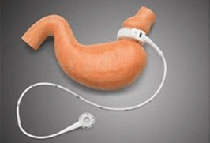
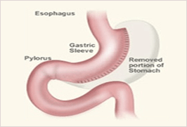

Bariatric Clinic
- Bariatric Clinic of Gil Medical Center provides the most experienced and comprehensive treatment to manage morbid obesity of patients. Our clinic is the nation’s only clinic where all kinds of bariatric surgery are performed regularly every year. Dr. Kim, Sung-Min, MD, Ph.D, is a bariatric surgeon who has been leading the clinic for the past several years, and there have been highly positive feedbacks from patients who successfully lost weight after receiving treatments.
Overview
-

Laparoscopic Adjustable Gastric Banding (LAGB), like the gastric bypass surgery, involves restricting the stomach size. However, the process of restriction differs and is both adjustable and reversible. The procedure is done laparoscopically through small incisions in the abdomen. A silicone band is placed around the upper part of the stomach which creates a small pouch. The stomach holds less food and induces feeling of satiety. The procedure is usually done on an outpatient basis and takes about one hour. Many patients are able to return to work in one week. The band is adjustable. The silicone band around the stomach is hollow, and the band can be made tighter or looser by adding or removing saline. Adjustments are made to meet individual weight loss needs. The band is usually adjusted every four to six weeks during the first year after surgery. This limits the amount of food you can eat. You feel fuller faster and you lose weight because you eat less. The band is adjustable and customized to each patient and can be removed if necessary. It is the least invasive option and it involves no stomach stapling, cutting or intestinal rerouting. The band has the lowest complication rate and has a very low risk of malnutrition. -

Laparoscopic Vertical Sleeve Gastrectomy (VSG) is a relatively new procedure. We have experienced great success with this procedure. Our patients have lost the weight they expected while staying healthy. The sleeve gastrectomy is performed laparoscopically through small incisions. Sophisticated instruments and a small camera are inserted through these incisions to conduct the operation. The use of small incisions creates less tissue damage, fewer complications, and an earlier discharge from the hospital. In this procedure, most of the stomach is removed and a ‘vertical sleeve’ or tube is fashioned from the remaining stomach. The food goes through the stomach into the small intestine in a normal fashion. Because the stomach is so much smaller, it takes less food to fill you up, and you eat less. The food does not bypass any of the intestines so there is no malabsorption created by the sleeve gastrectomy. The production of the “appetite hormone” ghrelin is reduced since it is made by the stomach. The reduction of this hormone reduces hunger and contributes to the success of the procedure. The procedure is a satiety-inducing procedure because it reduces the “appetite hormone” ghrelin, and there is no bypassing of the small intestine therefore the risk of malnutrition is low. Weight loss after the sleeve gastrectomy is similar to the weight loss after the gastric bypass.